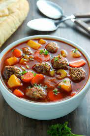

Meatball Soup

Description
This is a coveted soup that is quite gaseous as one may say. Few soups compare to the sheer glory of it. You get the point no need to beat a dead horse.
Essentially, you do da carrots and celeries and then on top of that the seasonings man. Can't forget the seasonsings. And then some parsely and what not. Tomatoes too.
Ingredients
- Celery
- Carrots
- Onion
- Tomato soup
- Seasonings
- Meatballs
- Parmesan cheese
- Pasta of choice
Steps
- Get your meatballs in a pan or in the oven whichever is preffered to get them started while we work.
- Put some oil in the pot and give some color to your diced carrots, onion, and celery.
- After they have sufficient color add the tomato soup and season.
- Bring the tomato soup to a boil.
- Dump the pasta in for 10 minutes.
- Add meatballs and let it cook on low heat for another 5 minutes or so.
- Top with parsely and parmesan cheese and enjoy!